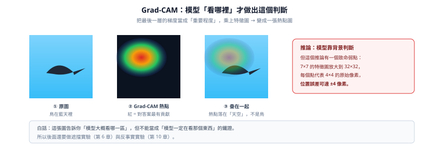

Grad-CAM：模型看哪裡？
一句話：Grad-CAM 會畫出「這張圖的哪些區域，對這次判斷最有貢獻」——但它只能提出假設，不能當結論。

這個實驗在做什麼
對每張測試圖算一次 Grad-CAM：用梯度當「每個通道多重要」，乘上特徵圖後加總，再放大回原圖大小，得到一張熱點圖。
- 輸入測試圖 + 訓練好的模型
- 操作forward 取 conv3 特徵 A、backward 取梯度；w = 梯度的空間平均；CAM = ReLU(Σ w·A)；用雙線性插值放大到 32×32
- 輸出原圖 / 熱點 / 疊圖 三連拍，並標上預測類別與信心
- 判讀紅=支持這個答案、藍=反對；但 7×7 放大到 32×32，一格代表 4×4 像素，位置誤差 ±4px
數字
| 樣本 | 熱點位置 | 當時的預測 |
|---|---|---|
| 貓（答對） | 臉、耳朵 | cat 80.6% |
| 船（答對） | 上層艙頂 | ship 97.4% |
| 船（答錯） | 紅色船身、水線 | car 81.4% |
| 鳥（答錯） | 整張幾乎空白，只剩天空 | plane 98.3% |
解説
Grad-CAM 像「事後問模型：你剛剛是看著哪裡回答的？」
但有一個大陷阱：我們把最後一層（只有 7×7）放大到 32×32。等於「一格代表 4×4 個原始像素」，位置誤差可以到 ±4 像素。
就像用馬賽克照片去猜「他剛剛看哪裡」——馬賽克格子太大，紅點壓在天空，可能只是因為天空離鳥只有一格。
學到什麼
Grad-CAM 的正確用途是產生假設（「它好像在靠天空」），然後用別的方法驗證（第 6 章的遮擋、第 10 章的反事實）。把它當成鐵證，就會像我們一樣在後面被打臉。
STEP 05程式碼
inspect_model.py
預設輸出 gradcam_conv2.png 與 gradcam_conv3.png 兩版對照
執行方式：
python inspect_model.py --dataset cifar10 --n 4